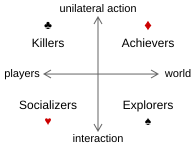
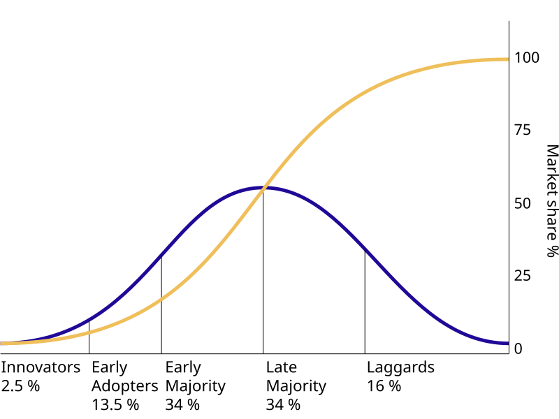
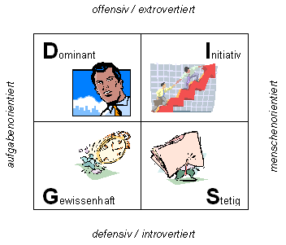
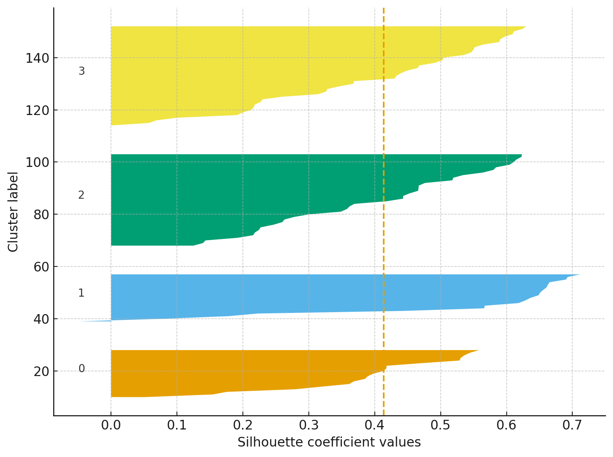
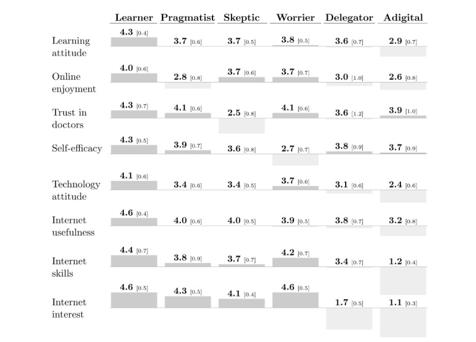

Behavioral archetype map
About
A behavioral archetype map plots user segments on a 2×2 grid based on behavioral dimensions rather than demographic characteristics. The two axes are chosen from research — they represent the behavioral variables that most meaningfully differentiate how users approach the product or context. Each quadrant describes an archetype defined by how people act (frequency, confidence, strategy, dependency) rather than who they are (age, location, job title). Archetypes derived this way are directly actionable for design: they describe patterns that different interface choices can serve or fail.
When to use
Use a behavioral archetype map when your research reveals that user behavior varies significantly along two clear dimensions, and when those dimensions are more predictive of needs than demographic categories. It is especially useful when the same demographic profile contains very different behavioral types — common in consumer products used by a wide range of people for different purposes.
When not to use
Do not force a 2×2 when the behavioral space is not genuinely two-dimensional. If user variation is better described along a single spectrum or across more than two axes, a different structure will represent the data more accurately. Also avoid labeling archetypes with negative characterizations — all archetypes represent valid user strategies.
References
Examples
Click any example to view full size and visit the original source.




